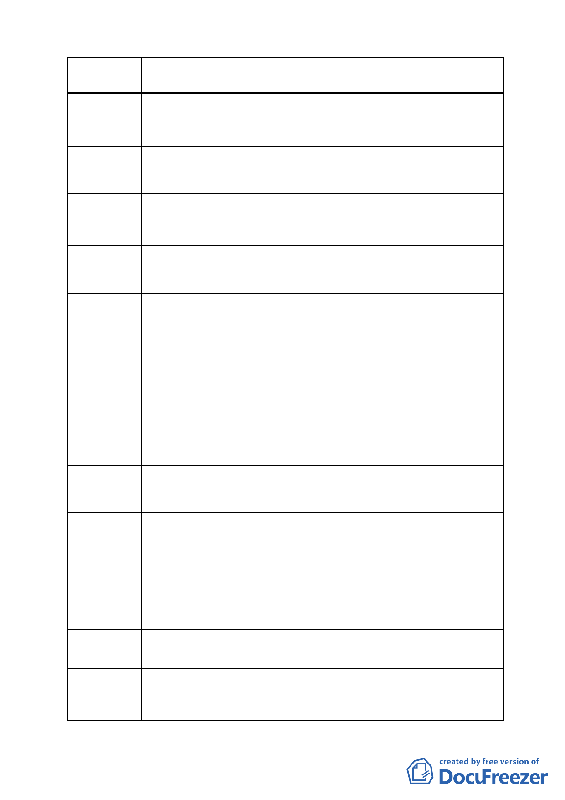

案 名 變更臺北市南港區鐵路地下化沿線土地主要計畫案
由於本公司所須費用相對本公司的規模是相當大的，因此拆
陳情理由 5 遷補償金的多寡對本公司的財務計畫有重大的影響，所以本
公司必須要瞭解補償金估算原則。
建議參酌比照內政部訂頒之「土地徵收遷移查估基準」估算
建議辦法 5 補償費。
此案中有眾多的工廠與公司行號存在，依市府的規劃這些單
陳情理由 6 位所雇用的員工將面臨失業的危機，因此各地主所面臨的問
題比土地變更後所獲得利益更大。
建議市府責請勞工局從旁協助各地主、事業單位解決員工問
建議辦法 6 題。
於變更臺北市原南港臺鐵貨運站交通用地、商業區、中華電
信南港機房電信用地及毗鄰工業區為公園用地（供流行音樂
中心使用）暨變更南港車站東側學校用地為商業區主要計畫
案已於民國 97 年 1 月 15 日府都規字第 09700085400 號公告。
陳情理由 7
其中委員會決議「有關中華電
信股份有限公司所提其釋出土地之後之地上物拆遷補償等權
益問題，請市府後續與行政院經濟建設委員會及相關單位召
開協調會議作適當處理與考慮，請市府都市發展局負責追蹤
辦理情形」。因此中華電信股份有限公司所提十二億元拆遷補
償費應不計入此跨區市地重劃案的費用。
建議市府與中央政府協議以擴大內需振興經濟四年四千億元
建議辦法 7 的預算支付，降低各地主的費用負擔。
是否地主參與市地重劃後，以原土地面積 45％折價抵付共同
陳情理由 8
負擔之土地後，即可將原使用分區工業區變更為住宅區或商
業區，不需再依工業區變更為住宅區或商業區，再次捐地，
避免產生一隻牛剝兩層皮的情形發生。
建議市府於主計畫案中註明，以免地主再次捐地，產生一隻
建議辦法 8 牛剝兩層皮的情形發生。
本主要計畫修正案採行之市地重劃各地主至少需繳納 45％的
陳情理由 9 抵費地，抵費地負擔比例過高。
建議可採用都市更新權利變換的方式進行本區都市計畫變更
建議辦法 9 及土地整體開發，以兼顧本區各地主權益及都市整體變更開
發效率。
- 43 -